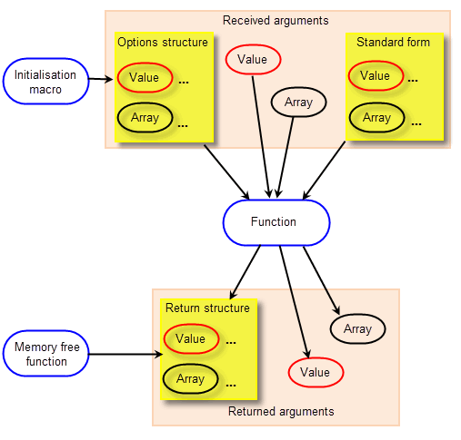

| |
Writing Parasolid Applications |
| <<< Application Support | Chapters | Multi-Processing Support >>> |
Parasolid is supplied as a single library of C-callable functions, together with associated header files, and in order to perform solid modelling operations, you call these functions from within your application code. Before this can be done, Parasolid needs to be integrated with whatever development environment you are using. This is simply a case of specifying the location of the required library, headers and so on. In addition, your application needs to include code that ensures that it can interact with Parasolid correctly.
This chapter gives you an overview of how you approach the development of a Parasolid application, and discusses:
You can deliver Parasolid to your customers with your application just by including a few files (including the library file itself) with the other components of your product. Any commonly available installer package will ensure that it gets installed on the customer’s computer in the correct location for the operating system they are running.
Your application must control all interaction between Parasolid and the operating system. In order to do this, you need to provide a number of modules, referred to generically as downward interfaces. There are usually two such modules, each of which defines a small suite of functions:
|
Functions that encapsulate the graphical information output by Parasolid’s rendering functions in a form suitable for passing to a graphics library, such as OpenGL or DirectX. See Chapter 14, “Displaying Data”, for more information. |
If you also wish to support Parasolid’s roll-back functionality (see Section 16.4.2), you also need to provide a delta frustrum, containing functions specific to that functionality.
You need to provide the required downward interfaces before you can successfully call Parasolid operations from your own application code. Parasolid ships with example code to help you write your own versions of them.
Calling Parasolid functionality from your application code is a simple process. Parasolid has a long history of strong design principles and offers its functionality through a consistent interface that is accompanied by complete and thorough reference documentation. This consistency gives you the freedom to structure your own application code in the way that suits you best, without having to make compromises because of any requirements imposed due to integration with Parasolid. This section introduces you to the structure of the Parasolid API.
Parasolid entities are organised in an object-oriented class hierarchy such that a function that is called on a given class can also be called on all its subclasses. For example, any function that is defined on curves can also be called on circles, lines, B-curves and so on.
Each function has a fixed set of arguments: some of these are used to supply data, and others are used to return information. Arguments are expressed as simple values, arrays, and structures of the types described in Section 16.3.2. The overall relationship between these different elements is illustrated in Figure 16-1.
Figure 16-1 Structure of a typical function group
You must set each argument explicitly when calling Parasolid functions, rather than omitting them completely. This is made easier by the use of option structures and initialisation macros, as described in Section 16.3.2.
For many functions, helper functions are provided that free the memory used for return arguments when it is no longer required: see Section 16.3.3.
Much of the information passed in Parasolid function code is collected together in related groups, or structures. There are three basic structures that you use in your code.
Return arguments in Parasolid functions consume variable amounts of data that are returned from Parasolid as C arrays. While Parasolid allocates most of the memory required automatically, your application must ensure that memory is freed correctly when it is no longer required. Parasolid provides functionality to let you allocate and free memory.
All Parasolid interfaces follow strict naming conventions that make them easy to use and identify. For example, function names always include the class of entity on which they can be called (BODY, FACE, etc.), as well as words that describe the operation to be performed. Different types of structures can easily be identified according to the suffix used on the structure name, and options structures and their macros are named according to the functions to which they apply.
A Microsoft .NET binding DLL for Parasolid is available. This allows Parasolid-based applications to be written in the C# programming language.
Like any complex application, when you start building a Parasolid-based application you need to plan what functionality you want to provide to your users. Many of these considerations affect the whole of your application, rather than just parts of it, and so you need to make decisions about them early on in the development process. This is equally true whether you are developing an application from scratch (in which case you need to decide the strategy you want to follow), or whether you are integrating Parasolid into an existing application (in which case you need to decide how Parasolid can best support your existing strategy, or consider improvements in your current design that Parasolid makes possible).
This section discusses some of the more important implementation decisions you will need to make early on in the development process, and what options Parasolid provides.
All Parasolid functions return an error code as the function value to the calling routine. This value broadly indicates whether the intended operation has succeeded (if zero) or failed (non-zero); in the case of failure, the error code describes the probable cause. In other situations, more details concerning the nature of the failure can be returned via the output arguments of the function. In these cases, a value of zero is returned as the error code, and the corresponding output arguments must also be examined.
To ease the handling of situations where non-zero error codes are returned, your application can register an error handling function with Parasolid. This function is called automatically whenever an error with a non-zero code occurs, and can be used to perform any clean-up operations needed as a result of the error.
If you wish, your application can also register signal handlers with the operating system in order to recover from run-time errors and enable user interrupts.
As discussed in Section 15.3, Parasolid provides two types of roll-back.
You need to decide which, if either, of these mechanisms you want to implement, and whether you want your users to be able to roll sessions and partitions forward, as well as backward.
For example, you could implement partition-level roll-back so that a new partition is created for each individual part. Users could then make changes to individual parts and roll them back or forward without affecting the other parts in the session.
Your application may need to track various entities within any Parasolid session. For example, tracking is required in order to:
Parasolid provides several methods for tracking entities, discussed in Section 15.5. You need to decide which of these methods is best suited to you.
There are a number of session-level options you can control that alter the behaviour for the whole Parasolid session. You might decide to give your users control over these options (via a scheme of application preferences), or you might decide to hard code them into your application. Examples of these options include:
|
Whether checks are performed by various operations, and whether to attach discontinuous or self-intersecting geometry to topology. See Section 3.7.3. |
|
|
Whether to create general bodies from boolean operations. See Section 3.7.2. |
|
|
Whether to use SMP when more than one processor is available. See Chapter 17, “Multi-Processing Support”. |
| <<< Application Support | Chapters | Multi-Processing Support >>> |